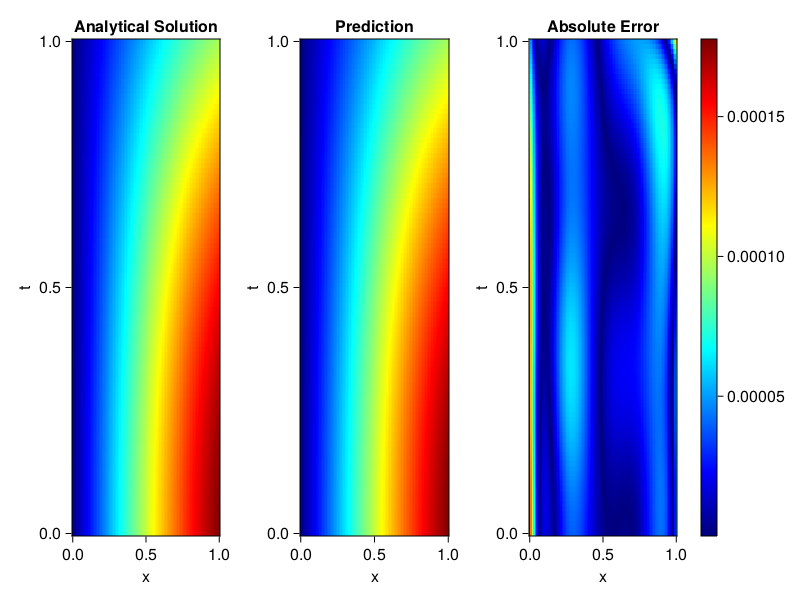
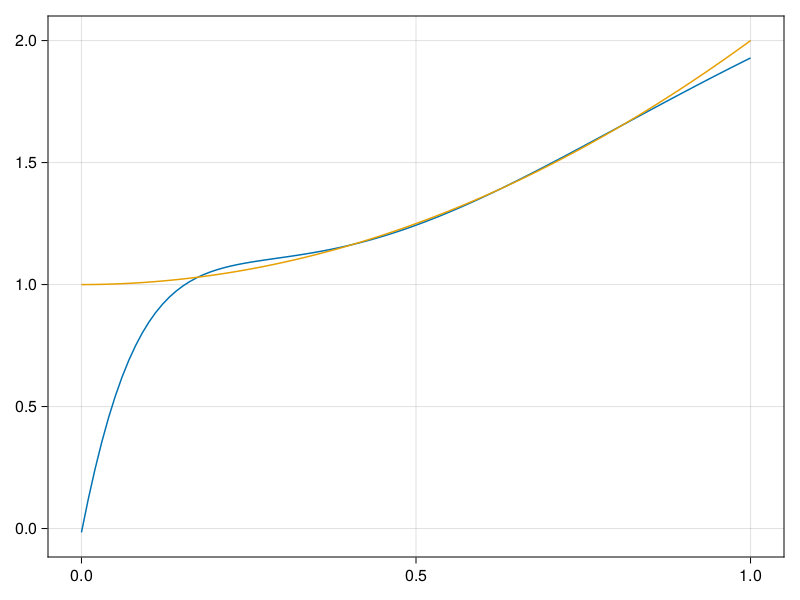

Inverse problem for the wave equation with unknown velocity field
We are going to sovle the wave equation.
using Sophon, ModelingToolkit, IntervalSets
using Optimization, OptimizationOptimJL
@parameters x, t
@variables u(..), c(..)
Dₜ = Differential(t)
Dₜ² = Differential(t)^2
Dₓ² = Differential(x)^2
s(x,t) = abs2(x) * sin(x) * cos(t)
eq = Dₜ²(u(x,t)) ~ c(x) * Dₓ²(u(x,t)) + s(x,t)
bcs = [u(x, 0) ~ sin(x),
Dₜ(u(x, 0)) ~ 0,
u(0, t) ~ 0,
u(1, t) ~ sin(1) * cos(t)]
domains = [t ∈ Interval(0.0, 1.0),
x ∈ Interval(0.0, 1.0)]
@named wave = PDESystem(eq, bcs, domains, [t,x], [u(x,t),c(x)])\[ \begin{align} \frac{\mathrm{d}}{\mathrm{d}t} \frac{\mathrm{d}}{\mathrm{d}t} u\left( x, t \right) =& c\left( x \right) \frac{\mathrm{d}}{\mathrm{d}x} \frac{\mathrm{d}}{\mathrm{d}x} u\left( x, t \right) + \cos\left( t \right) \left|x\right|^{2} \sin\left( x \right) \end{align} \]
Here the velocity field $c(x)$ is unknown, we will approximate it with a neural network.
pinn = PINN(u = FullyConnected((2,16,16,16,1), sin),
c = FullyConnected((1,16,16,1), tanh))
sampler = QuasiRandomSampler(500,100)
strategy = NonAdaptiveTraining(1, (10,10,1,1))NonAdaptiveTraining{Int64, NTuple{4, Int64}}(1, (10, 10, 1, 1))Next we generate some data of $u(x,t)$. Here we place two sensors at $x=0.1$ and $x=0.5$.
ū(x,t) = sin(x) * cos(t)
x_data = hcat(fill(0.1, 1, 50), fill(0.5, 1, 50))
t_data = repeat(range(0.0, 1.0, length = 50),2)'
input_data = [x_data; t_data]
u_data = ū.(x_data, t_data)1×100 Matrix{Float64}:
0.0998334 0.0998126 0.0997503 0.0996464 … 0.275281 0.267213 0.259035Finally we construct the inverse problem and solve it.
additional_loss(phi, θ) = sum(abs2, phi.u(input_data, θ.u) .- u_data)
prob = Sophon.discretize(wave, pinn, sampler, strategy; additional_loss=additional_loss)
@time res = Optimization.solve(prob, BFGS(), maxiters=1000)u: ComponentVector{Float64}(u = (layer_1 = (weight = [-0.20072596546424232 -1.047691520873795; -0.9390644047381083 1.1595204071360865; … ; 1.105462989406208 -1.225716842700118; 0.9240823776783759 1.2200743113187071], bias = [-0.08811106392215752; 0.022555589387607468; … ; 0.004502483983096578; 0.10356697058666306;;]), layer_2 = (weight = [0.2254351655107279 0.058901958637925335 … 0.19808651606308172 -0.37575736547792254; -0.27893143482492583 0.22173188580630127 … -0.22613713070451613 0.37627849478251724; … ; 0.4652561878784154 0.3622202257803145 … 0.19269922752327123 0.010354057770107198; -0.4778511090199639 0.29196912488708004 … -0.039971790720658734 -0.5270370580115179], bias = [-0.0914434885419728; -0.1610938930407631; … ; -0.29162110985519474; -0.23821066580961753;;]), layer_3 = (weight = [0.2149209308437769 0.025775525269901657 … 0.044342319674862365 -0.4346254104827661; -0.27950421927165947 0.44824951673549085 … -0.11273342066231891 -0.3401111568366681; … ; -0.2873090061646377 -0.5207486165673656 … 0.04086497980853718 0.25687777447205373; -0.5662121683737708 -0.2952319421785916 … -0.08285278792417887 0.2764681274286102], bias = [-0.0747117150771472; 0.045467955613673235; … ; 0.020510598804527318; 0.07659038745676398;;]), layer_4 = (weight = [0.6037476487905095 0.007322924888293182 … -0.2731634913612213 -0.0762796457128957], bias = [-0.15622637205666023;;])), c = (layer_1 = (weight = [2.3629178814379657; 2.1868248441439184; … ; 1.6574994017895188; -1.8944713401516449;;], bias = [0.31132111015914643; 0.42511485609544625; … ; 0.1753573154829415; -0.3251862062590201;;]), layer_2 = (weight = [-0.6410664616346341 -0.2469296184717411 … -0.8625423468220604 -0.2789605376272417; 0.6430605128907825 0.2521710820753068 … 0.29890098690995054 -0.15362258564250886; … ; -0.7114615478869678 0.20068011207280947 … -0.3081228794516203 -0.29864864804834385; 0.47755362369976984 -0.08589301380736468 … -0.6381081575693692 -0.3720825756292101], bias = [0.24996500719279238; 0.6641200263042871; … ; -0.11801363954075568; 0.12663159243941902;;]), layer_3 = (weight = [-0.7676087873007243 -0.3859963226010026 … 0.04988669413743448 -0.1730222772170519], bias = [-0.4914955182676004;;])))Let's visualize the predictted solution and inferred velocity
using CairoMakie
ts = range(0, 1; length=100)
xs = range(0, 1; length=100)
u_pred = [pinn.phi.u([x, t], res.u.u)[1] for x in xs, t in ts]
c_pred = [pinn.phi.c([x], res.u.c)[1] for x in xs]
u_true = [ū(x, t) for x in xs, t in ts]
c_true = 1 .+ abs2.(xs) |> vec
axis = (xlabel="x", ylabel="t", title="Analytical Solution")
fig, ax1, hm1 = heatmap(xs, ts, u_true, axis=axis; colormap=:jet)
ax2, hm2= heatmap(fig[1, end+1], xs, ts, u_pred, axis= merge(axis, (;title = "Prediction")); colormap=:jet)
ax3, hm3 = heatmap(fig[1, end+1], xs, ts, abs.(u_true .- u_pred), axis= merge(axis, (;title = "Absolute Error")); colormap=:jet)
Colorbar(fig[:, end+1], hm3)
fig
fig, ax = lines(xs, c_pred)
lines!(ax, xs, c_true)
fig